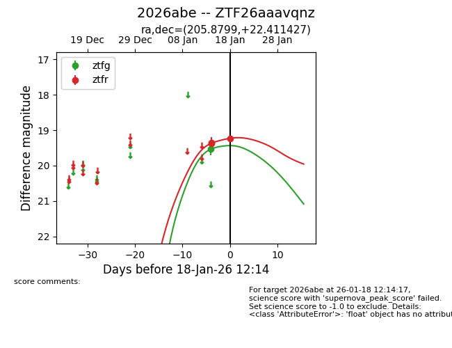
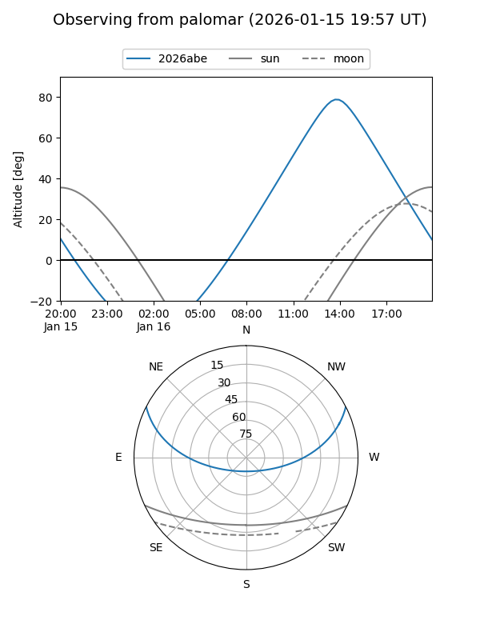
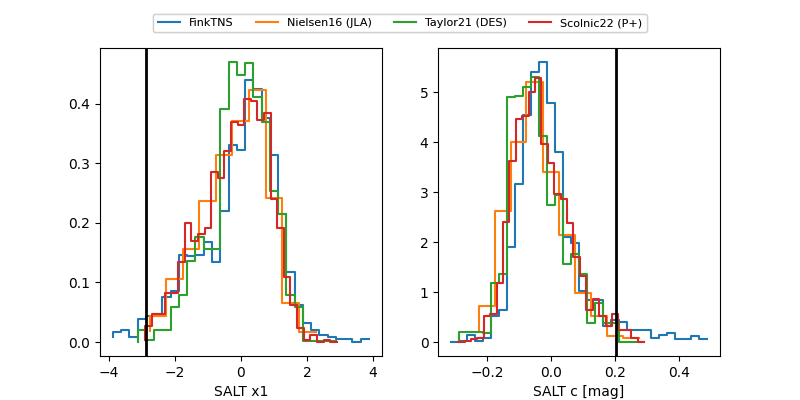

2026abe
Target 2026abe at 2026-01-25 11:21
Aliases and brokers:
FINK: link
Lasair: link
ALeRCE: link
TNS: link
YSE: link
alt names
ZTF26aaavqnz (ztf,fink_ztf)
2026abe (tns,yse)
Coordinates:
equatorial (ra, dec) = 205.8799,+22.41143
equatorial (HMS+DMS) = 13:43:31.17,+22:24:41.14
galactic (l, b) = (14.0116,+77.28056)
Flags:
Photometry:
last ztfg=19.67, ztfr=19.08
3 ztfg, 9 ztfr detections
Lightcurve

Visibility


Additional plots
